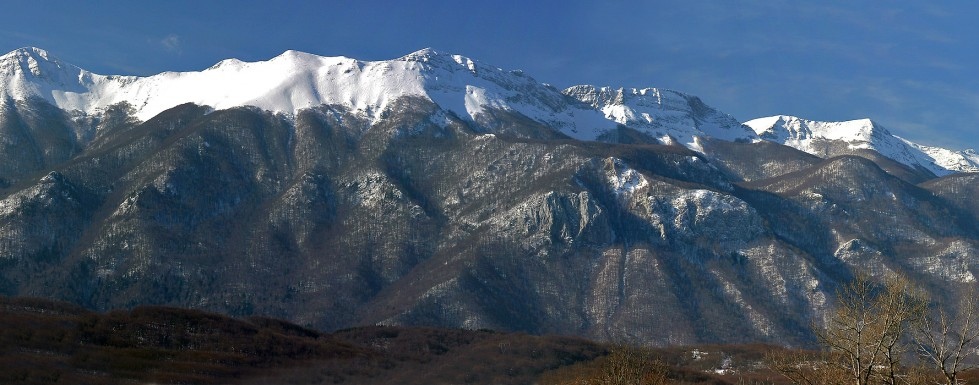

O Velebitu
Div Jadrana i čuvar prirode
Velebit ili velebitski masiv je najduža (145 km), ali po nadmorskoj visini tek četvrta planina u Hrvatskoj. Niži je od planina u Zagori - Dinare (1831 m), Kamešnice (1809 m) i Biokova (1762 m). Velebit je širine od 10 do 30 km, a površina mu je oko 2200 km2, a najviši vrh Vaganski vrh (1.757 m). Pripada Dinarskome gorju.
Pruža se uzduž Velebitskog kanala, dijela Jadranskog mora, od prijevoja Vratnik iznad Senja na sjeverozapadu do kanjona rijeke Zrmanje na jugoistoku. S kopnene strane ga okružuju Gacko, Ličko i Gračačko polje s rijekama Gacka, Lika i Otuča. Cijelo područje planine zaštićeno je kao park prirode, a Sjeverni Velebit i Paklenica su proglašeni nacionalnim parkovima. Unutar NP Sjeverni Velebit nalazi se i posebno zaštićeni strogi rezervat Hajdučki i Rožanski kukovi. Najpoznatija biljna endemska vrsta je velebitska degenija (Degenia velebitica) iz obitelji krstašica, prikazana na naličju kovanice od 50 lipa (prvi ju je opisao i klasificirao botaničar Arpad Degen te je i po njemu dobila ime). Na Velebitu se nalaze i najdublji speleološki objekti u Hrvatskoj: trodijelna Lukina jama duboka 1.392 m (od visine 1.436 m do dubine od 81 m n/m) i Slovačka jama 1.320 m.
Za planinare je na Velebitu uređeno mnogo markiranih staza i puteva, koji uzdužno i poprečno povezuju okolna mjesta i planinarske domove na planini. Po svojoj posebnosti, uređenosti i posjećenosti nužno je spomenuti Premužićevu stazu koja je građena između dva svjetska rata, a povezuje Planinarski dom Zavižan, preko Velikog Alana s Oštarijskim vratima; tj. prolazi uzdužno Sjevernim i Srednjim Velebitom. Velebit je zbog svoje veličanstvenosti jedan od hrvatskih narodnih simbola; pojavljuje se u domoljubnoj pjesmi "Vila Velebita". Planina predstavlja značajnu prepreku u komunikaciji sjeverne i južne Hrvatske. Uz Vratnik (698 m), najvažniji prijevoji preko kojih su sagrađene ceste su Oštarijska vrata (928 m) između Gospića i Karlobaga i Prezid (766 m) između Gračaca i Obrovca. Suvremena cestovna veza kroz Velebit ostvarena je tek 2003. otvaranjem tunela Sveti Rok. Uz obalu podno Velebita prolazi Jadranska magistrala koja je na tom dijelu poznata po velikom broju zavoja i čestom zatvaranju zbog bure tijekom zime.